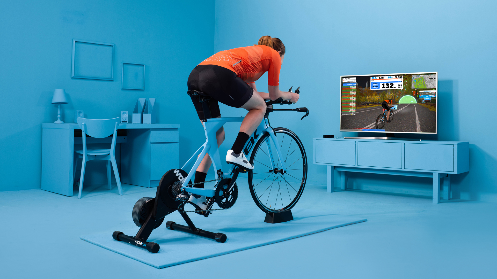
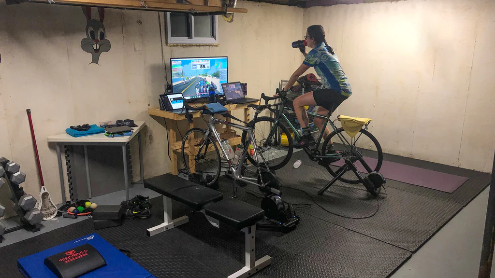
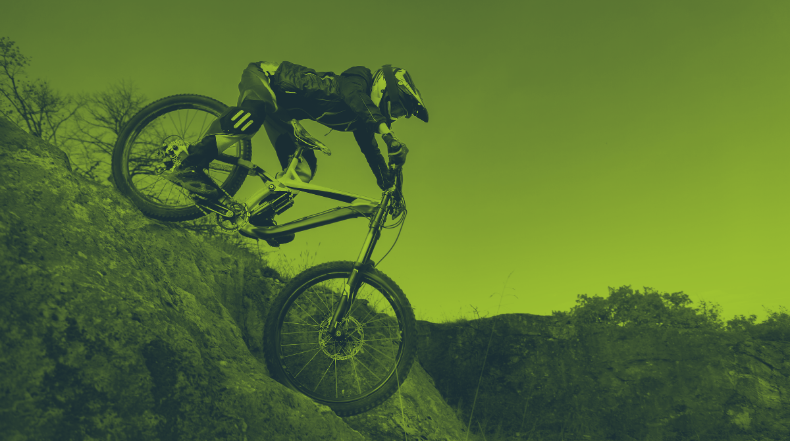
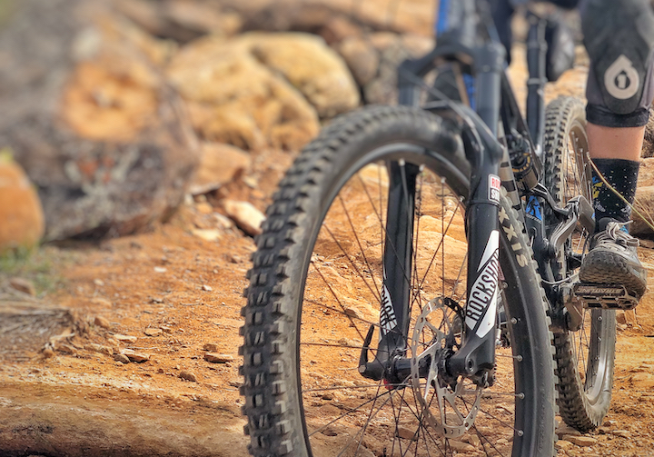
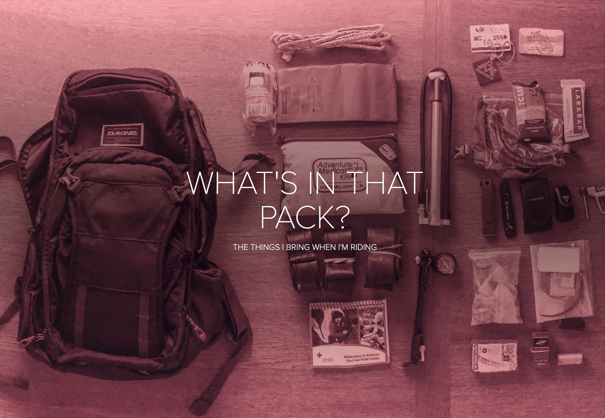

Menu
Home
Gallery
Lessons
All Articles
(13)
All the posts
All Articles
Bikepacking
Equipment
Fatbike
Skills
Trails
Training
Travel

Getting Started With Indoor Training

Indoor training with Zwift is a game changer!

Preparedness, Control & Performance
A Midsummer's Bikepacking Trip

What I Have Learned Switching From Clipless to Flat Pedals
Things To Know About Kids Bikes

What You Need To Carry When You Ride
Ottawa-Gatineau Fatbike Trail Primer
‹ Previous
1
2
Next ›